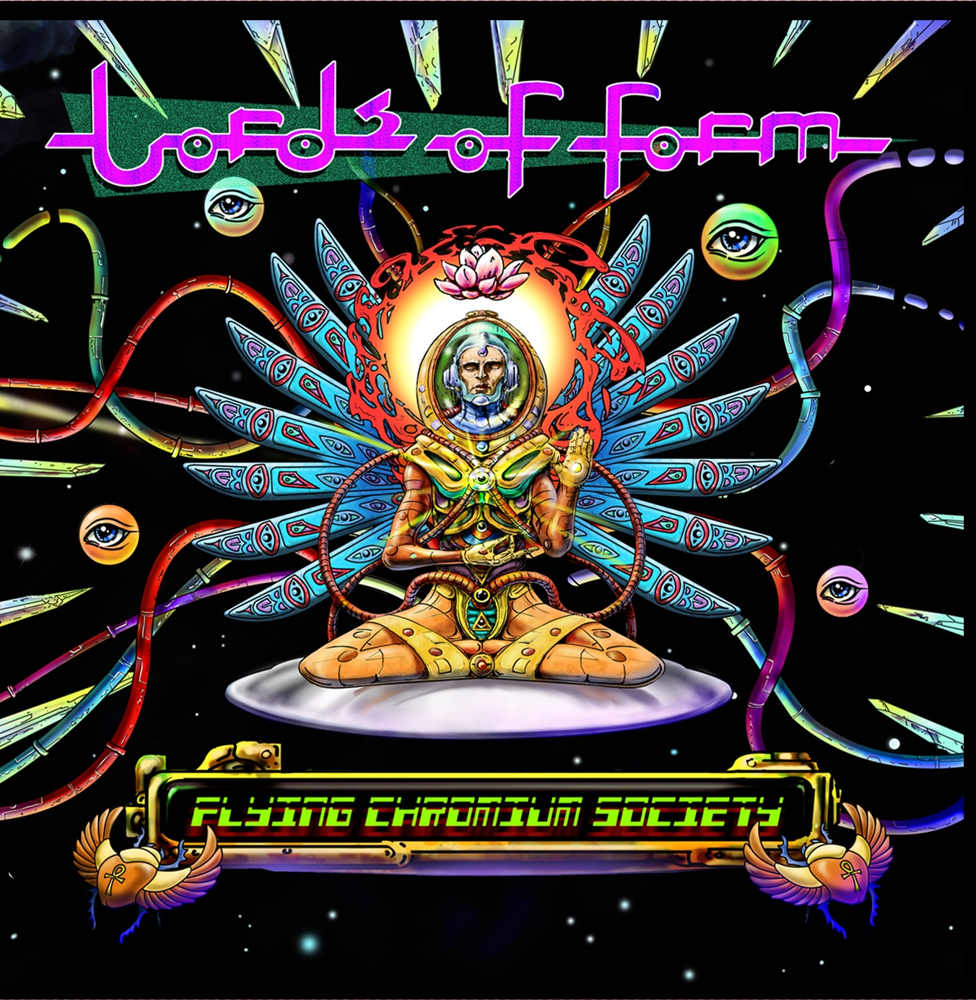
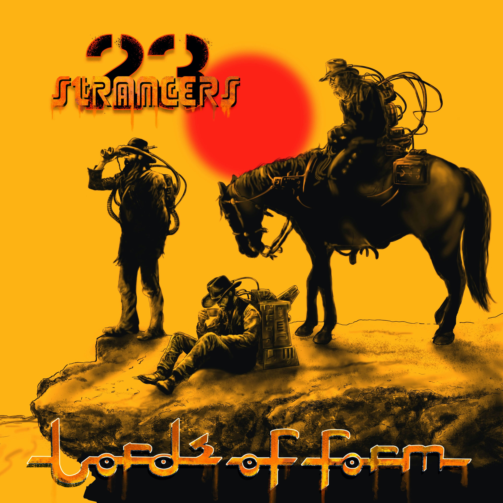
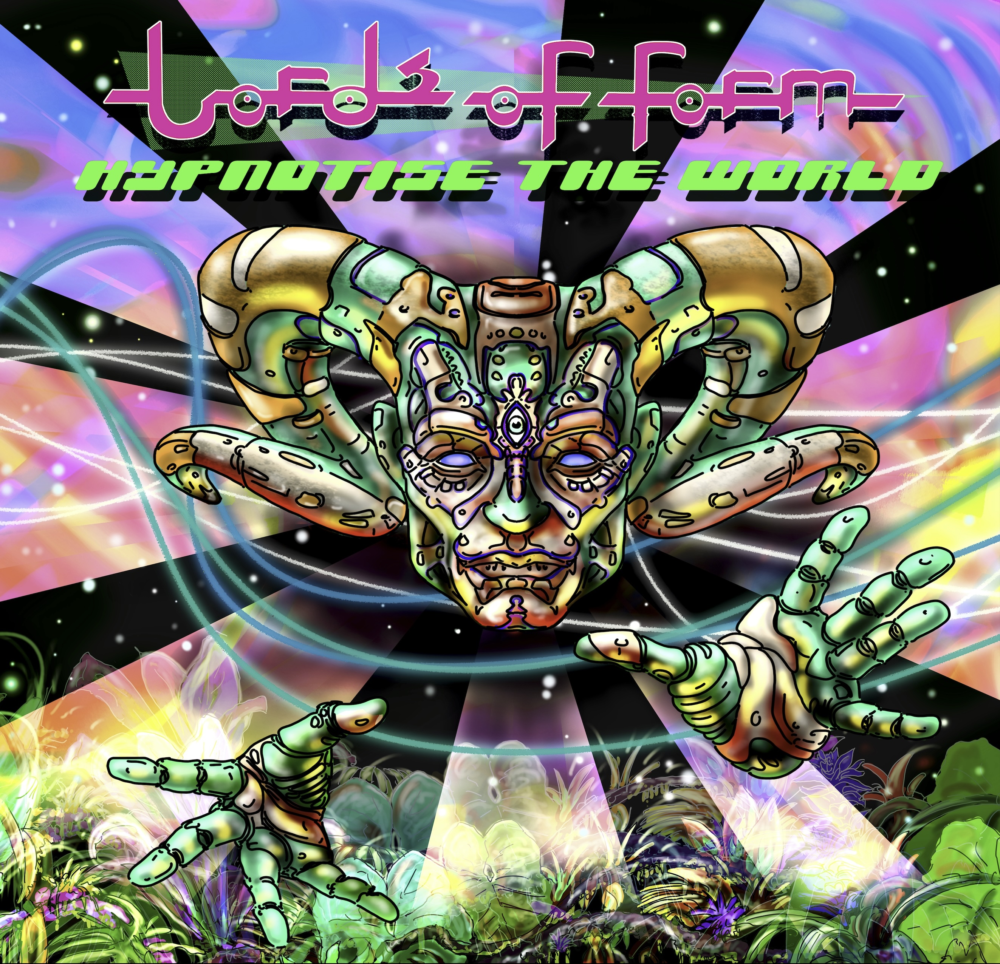
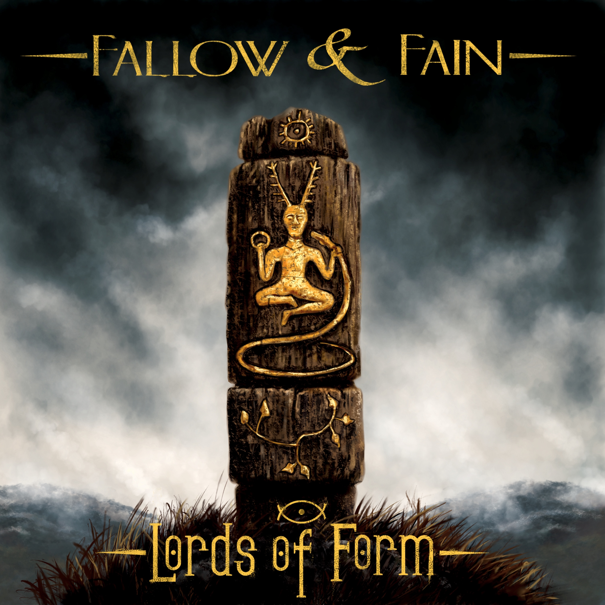

2022 • Flying Chromium Society
2023 • 23 Strangers
2024 • Hypnotise the World
2026 • Fallow & Fain
Extras

Flying Chromium Society began life as a solo record and, in many ways, so did the entire Lords of Form project. At the same time, I was assembling a live band and invited old friends Jamie Gillett to record the drums while Ross Fuller contributed additional guitar and vocals. Together they helped shape what became the debut full-length release.
Several of the songs had been developing for years. Electric White Highway was originally written as a potential Hawkwind track, with Dave Brock contributing ideas before it ultimately took a different path. Rather than let it disappear, I brought it back into the Lords of Form world, where it finally found its home.
Your Last Call opens the album with a low-frequency introduction that seems to vibrate the room before giving way to the powerful It's Revolution Time, a track whose themes remain as relevant today as when it was written. Low Orbit drifts into expansive space, Winter's Bride is a deeply personal reflection written for absent people, while Tribes Collide combines complex arrangements with outstanding drumming.
Elsewhere, Little Victories delivers a driving, riff-heavy groove, Anomalies explores deep-space ambience, and the title track, Flying Chromium Society, grew from one of the oldest musical ideas I ever had into something that still feels special to me. This Dying World was inspired after returning from a heavy metal festival with Hawkwind, blending crushing riffs with experimental passages and largely improvised vocals.
The expanded edition adds three further pieces that complete the journey. Threat of Creation dates back to the earliest days of the project, Believe Me, It's a Trip lives up to its name, while Chromium Dub Society Experiment 1 reflects my love of dub music, reimagining space rock through echo, atmosphere and repetition.
Flying Chromium Society received outstanding reviews, sold exceptionally well, and remains an important milestone—the album that introduced the sound and laid the foundations for everything that followed.

23 Strangers takes its name from a deeply personal experience and marks another step forward for Lords of Form. Opening with the explosive Pulling Strings, the album immediately sets its pace. It's a true pocket rocket—fast, relentless and packed with energy—setting the tone for everything that follows.
Yakbatter's Last Stand takes its inspiration from a legendary Dungeons & Dragons dwarf character who became famous amongst the gaming groups I played with. Floating pianos, rich string arrangements and a cinematic atmosphere make it one of the album's most evocative moments.
Hymlic Rodeo delivers an uncompromising anti-establishment message wrapped inside another relentless barrage of riffs and driving rhythms. The lyrics speak for themselves, but at its heart the song is simply about kindness and treating each other better.
The title track, 23 Strangers, opens out into expansive soundscapes filled with soaring lead guitar and analogue synthesizers, while Dragged From The Pack draws on the heady heights of Arabic-inspired melodies, blending them with contemporary electronic music into a raw psychedelic mix.
No Fear Here locks into a hypnotic motorik groove built around its repeated mantra, while Low Crime Tuesday introduces treated cello, piano and layered textures to create one of the album's most atmospheric moments.
The record closes with Feed The Beast, an all-out assault of electronics, guitars and screamed vocals. Intense, uncompromising and full of energy, it brings the album to a dramatic conclusion while hinting at where Lords of Form would head next.

Hypnotise the World almost never happened. Around six weeks before release, I lost the entire project. Once the initial panic had passed, I rolled my sleeves up, trusted my memory and rebuilt the album from scratch. Interestingly, one of the original title tracks still survives only in my head and may yet emerge on a future Lords of Form release.
Opening track Aerial Slew sets the scene with an alien, science-fiction atmosphere, balancing ambient textures with dissolving electronics. Break My Gaze follows with syncopated rhythms, a powerful bass line inspired by NoMeansNo and one of the strongest lyrical performances on the album.
The centrepiece is the twenty-minute epic We See You Suffer. Apart from Jamie Gillett's drumming, the performance is almost entirely my own. I improvised a continuous bass performance before immediately recording equally spontaneous guitar parts over the top. The result is a relentless cosmic journey that remains one of the most satisfying pieces I've ever created.
Ravaged develops from haunting synthesised vocals into huge, riff-driven passages while reflecting on society's tendency to follow without question. FHHU wanders through shimmering analogue synth hooks and excellent drumming, becoming one of the album's most popular tracks.
The record closes with Everyone Knows Your Name, a short but explosive finale that channels raw garage energy into two and a half minutes of uncompromising intensity.

Fallow & Fain marks a new chapter for Lords of Form. A songwriting partnership with Tony Whiting began after he asked me to produce an album for him. During those sessions I played him a handful of unfinished ideas and he immediately began returning them with lyrics and vocal melodies. The chemistry was instant, and before long I invited him not only onto the album, but into the band itself.
Written over the winter months, the album draws its inspiration from old English folklore and the imagined witch who lives deep within the woodland close to where we rehearse. Those landscapes, myths and changing seasons became the foundation for a collection of songs rooted in atmosphere, mystery and place.
Musically, Fallow & Fain embraces everything that defines Lords of Form: psychedelia, hypnotic repetition, heavy riffs, analogue synthesizers, spacious effects and memorable melodies, all woven together into what I believe is our most complete work to date.
From the driving force of Leif Man to the ancient megalithic monuments celebrated in Stone Still Stands, the album moves effortlessly between weight and beauty. Other highlights, including The Ocean's Roar, continue the journey through folklore, landscape and imagination.
It quickly became the fastest-selling CD release in the band's history and the response from listeners has been extraordinary. Interestingly, it's also the only Lords of Form album I regularly choose to listen to myself, something I rarely do with my own music.
Today, almost the entire album forms the backbone of our live set, while also pointing confidently towards the next chapter of Lords of Form. For me, Fallow & Fain represents everything the band has become—and everything still to come.
Staring Downwards EP 1 was the very first Lords of Form release, originally issued as a digital-only EP in 2021. Although only two tracks long, it marked the beginning of the project and hinted at the direction that would eventually become Lords of Form.
Opening track Howitzer is a ten-minute hypnotic grind built around a thunderous bass line and wonderful guitar work from Chris Rizzanski. Chris and I spent a great deal of time writing and recording together, and we thoroughly enjoyed making music. Although he later moved to France and our musical paths diverged, there's still a considerable archive of unreleased material that could one day become a superb physical release.
The EP closes with Have You Got the Guts?, another hypnotic, repetitive, motorik journey that simply floats by, driven by groove, repetition and atmosphere.
Today, Staring Downwards EP 1 remains available exclusively as a digital release through Bandcamp.
Released on vinyl by SkidMark Multimedia, Our Shared Humanity is a collection of what I consider to be the pinnacle of the first three Lords of Form albums, including the complete twenty-minute version of We See You Suffer.
It's a great compilation, but more importantly it's a journey in itself. The running order creates its own atmosphere, while the mixes and mastering differ subtly from the original releases, making it a unique listening experience rather than simply a collection of previously released songs.
Beautifully presented with artwork by Trev Kendrick, it remains the only Lords of Form release available on vinyl. There are still a few copies left in the stock room, so if you'd like one, I wouldn't hang about. Once they're gone, I have no plans to repress it.
For anyone discovering Lords of Form for the first time, Our Shared Humanity is a wonderful introduction to the band. For vinyl collectors, it's a delicious product that sounds wonderful, looks beautiful... and yes, it even smells really good.